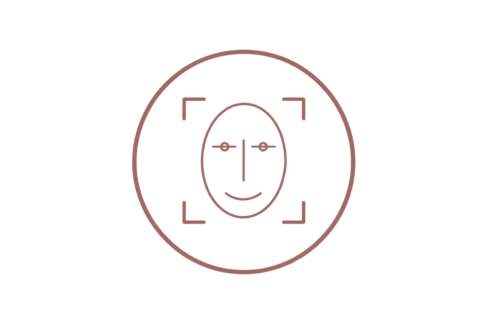

顔画像の分析
画像から顔の配置や特徴を整理します。
AI TECHNOLOGY
美容医療の検討を支えるFIORNEA FACEの仕組みをご紹介します。
FIORNEA FACEは、顔画像から特徴を整理し、カウンセリングで施術プランを検討するための情報を提示する技術です。分析結果だけで施術を決定せず、対話と説明を重ねながら活用することを大切にしています。
SYSTEM FLOW

画像から顔の配置や特徴を整理します。
特徴を分かりやすい項目にまとめます。
カウンセリングの検討材料として提示します。
※FIORNEA FACEによる表示は検討を補助する情報です。実際の施術については医師による確認と説明が必要です。
専門的な内容を整理し、相談時に確認しやすい形で提示します。
表示結果だけに頼らず、ご希望を伺うための補助として使用します。